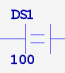
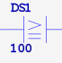
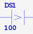
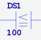
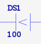
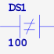
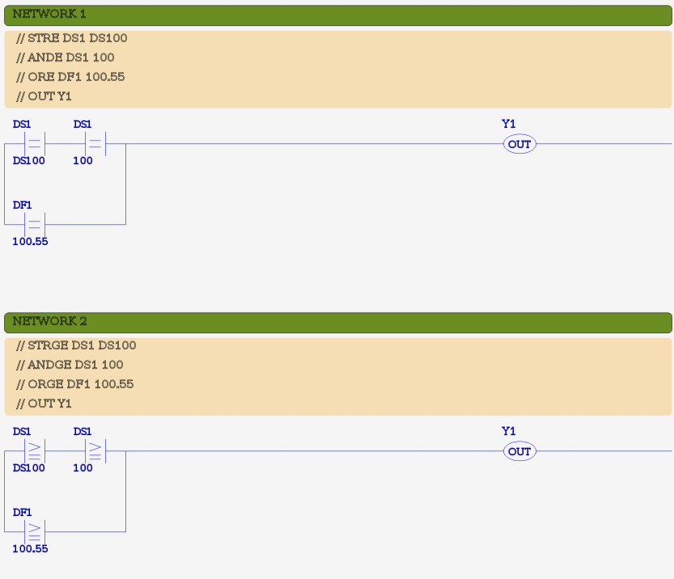
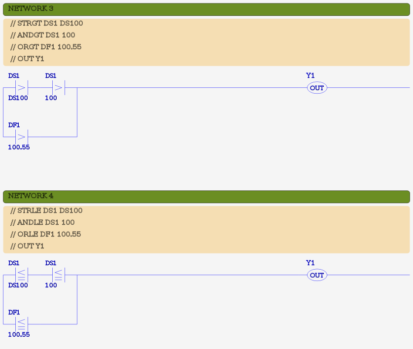
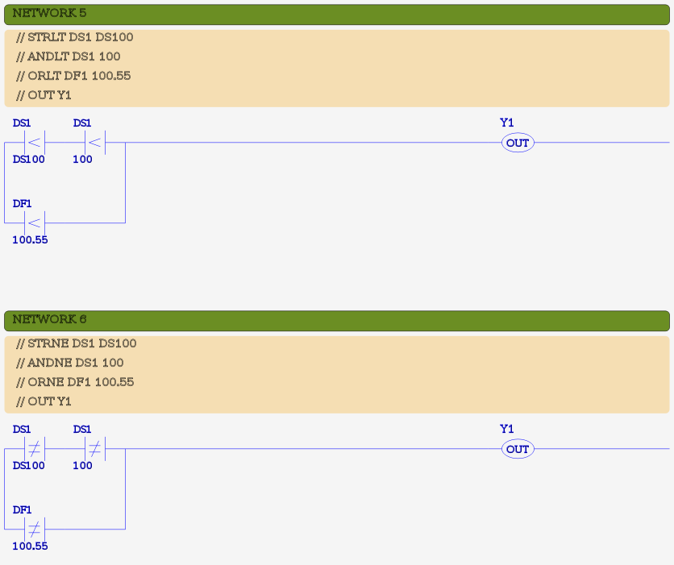

MBLogic
for an open world in automation
MBLogic
for an open world in automation
Comparison Instructions
Comparison instructions compare two word parameters and output the Boolean result to the logic stack.
| Instruction | Description | # Params | Symbol |
|---|---|---|---|
| ANDE | AND if parm1 equals param2 | 2 |  |
| ANDGE | AND if parm1 >= parm2 | 2 |  |
| ANDGT | AND if parm1 > parm2 | 2 |  |
| ANDLE | AND if parm1 <= parm2 | 2 |  |
| ANDLT | AND if parm1 < parm2 | 2 |  |
| ANDNE | AND if parm1 is not equal to parm2 | 2 |  |
| ORE | OR if parm1 equals parm2 | 2 | |
| ORGE | OR if parm1 >= parm2 | 2 | |
| ORGT | OR if parm1 > parm2 | 2 | |
| ORLE | OR if parm1 <= parm2 | 2 | |
| ORLT | OR if parm1 < parm2 | 2 | |
| ORNE | OR if parm1 is not equal to parm2 | 2 | |
| STRE | STR if parm1 equals parm2 | 2 | |
| STRGE | STR if parm1 >= parm2 | 2 | |
| STRGT | STR if parm1 > parm2 | 2 | |
| STRLE | STR if parm1 <= parm2 | 2 | |
| STRLT | STR if parm1 < parm2 | 2 | |
| STRNE | STR if parm1 is not equal to parm2 | 2 |
All comparison instructions take two explicit parameters and output their result to the logic stack. Each parameter is a word register or constant.
There are three categories of comparison instruction: AND, OR, and STORE. Each of these operates in a manner similar to to the corresponding Boolean input instructions, with the exception that they apply the Boolean result of the comparison operation to to top of the logic stack.
For any comparison operation, both parameters must be compatible with each other. Parameters are compatible if they are both within the same compatibility group. The compatibility groups are defined as follows:
- Signed numeric - DS, DD, DF, TD, CTD, SD, KInt, KDInt, KF, XS, YS
- Unsigned numeric (hex) - DH, XD, YD. KHex
- Text - TXT, KTxtChar, KTxtStr
The type and address abbreviations are defined in the section on addresses and constants.
If one parameter is a string constant (e.g. "abc123"), and the other is a text register, the string constant will be compared to the series of text registers beginning at the register specified. The comparison will be on a character by character basis, such that the comparison will fail at the first character that does not meet the comparison criteria.
For example, if the string "hijklanop" is compared to to see if it is greater that a series of registers containing "abcdefghi", the comparison will fail on the sixth character because "a" is not greater than "f".
Example:
// Compare signed numbers. NETWORK 1 STRE DS1 DS2 ANDGT 123 DD10 ORLE DF20 123.876 ORGE DF5 DS3 ANDLT 93 CTD3 OUT Y1 // Compare unsigned (hex) numbers. NETWORK 2 STNE 123fh DH52 ANDGE YD4 DH2 SET C20 // Compare text. NETWORK 3 STR X3 ANDE TXT5 TXT10 ORGE "A" TXT12 ANDE "pass" TXT50 OUT C35
Ladder Examples
The following shows examples in ladder format. Each example shows the IL code as comments, followed by the ladder equivalent.
  